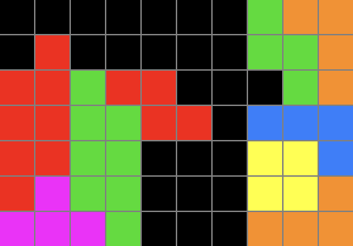
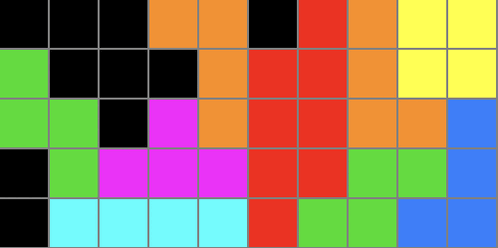
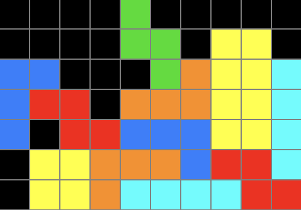
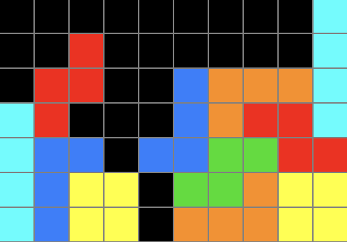
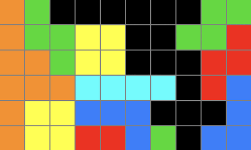
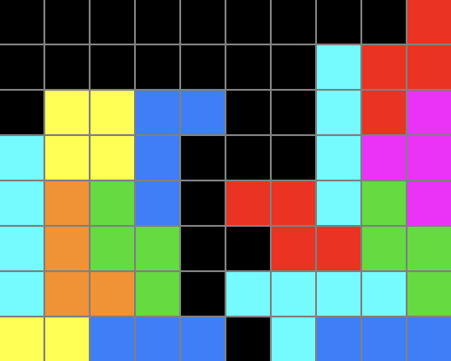
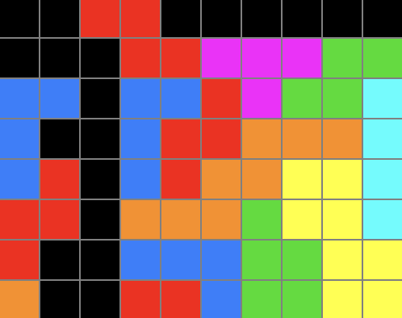

| テンプレ名 |
組み方例 |
総火力 |
備考 |
| ダブルダガー |
|
9LINE |
|
| STMB-cave |
 |
4LINE |
総火力は低いが、とても使いやすく地形が綺麗になりやすい。 |
| STSD |
 |
9LINE |
STMB-caveと同じく組みやすく使いやすい。だがTミノを2つ必要とするため手当たり次第に作るとTミノ不足になりがち。 |
| 階段ドネイト |
 |
4LINE |
平積みでも中開けでもどこでも使える優れもの。これまでの組みやすいテンプレと比較してもトップクラスに使いやすい。 |
| 社畜トレイン |
 |
9LINE |
1つ目のTSDを打たないと屋根がつけれないことから若干使いにくい印象。 |
| 欄干 |
 |
2LINE |
火力というより地形整理用。 |
| インペリアルクロス |
 |
9INE |
回転数が多く打つのに時間がかかるため、上位勢には好まれていない模様。 |
| TDアタック |
 |
11LINE |
TSTが絡むことから若干組むのは難しいが手間に比べ火力がとても高いため、コスパの良い中盤テンプレである。同じTミノの個数あたりの火力が高いため、上位勢に好まれる。 |
| キングクリムゾン |
 |
16LINE |
めちゃくちゃ火力が高い。でも半端な速度だと組んでる途中で相手の火力に押し負けるだろう。 |